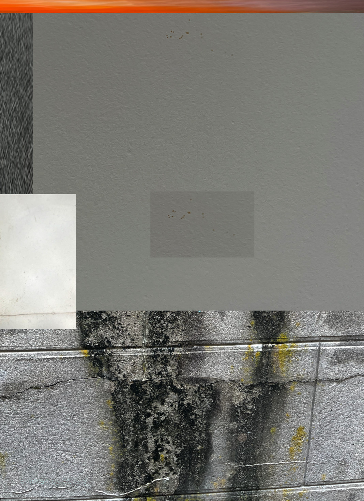

1. Philomène Auvray - Espoir
2. Philomène Auvray - Cobweb.2
3. Philomène Auvray - Les Oisaux Chantent
4. Philomène Auvray - gXqqq
5. ræntgen - 6_br4gnm9t12
6. ræntgen - Untitled
7. ræntgen - Untitled
8. ræntgen - Untitled
9. ræntgen - Untitled
A split with my friend, glitchcore/IDM artist ræntgen which I really enjoyed being part of because I like her music a lot and enjoyed making my side very much. My side is composed of four short concrète textural experiments, which I realized using GRM atelier, which had just came out at the time. I also manually chopped up drum breaks in Ableton to create these textures. Ræntgens side is her usual very lo-fi breakcore/IDM stuff, which I find really great. If you liked her side, I recommend checking out Math Angel, which she released on BMCM.
Originally came out on Spanish Breakcore Sprinkler on November 19 2025.
Download Link